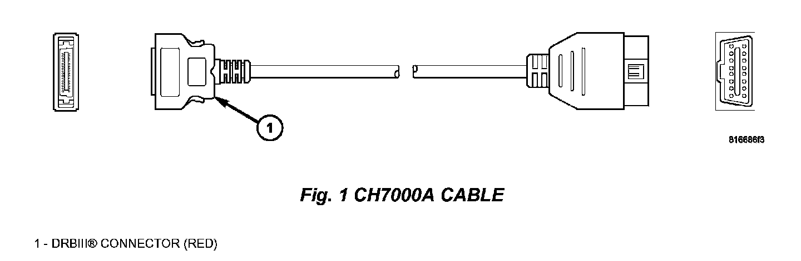
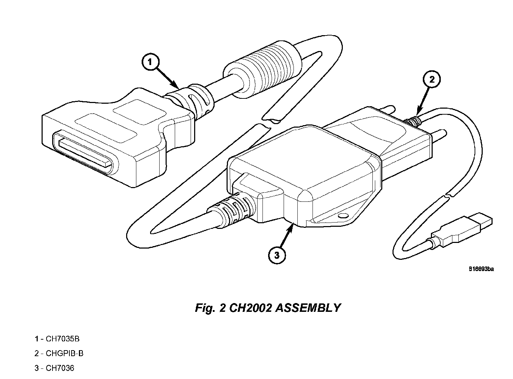
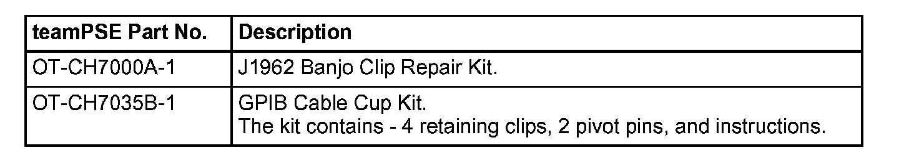

Engine Controls - Flash Programming Failure Recovery: Overview
NUMBER: 18-037-05GROUP: Vehicle Performance
DATE: October 20, 2005
THIS BULLETIN SUPERSEDES SERVICE BULLETIN 18-020-02, DATED JUNE 24, 2002 WHICH SHOULD BE REMOVED FROM YOUR FILES. THIS IS A COMPLETE REVISION AND NO ASTERISKS HAVE BEEN USED TO HIGHLIGHT REVISIONS.
SUBJECT:
Flash Programming Failure Recovery Using DRBIII(R)
OVERVIEW:
This Bulletin provides guidelines, to minimize flash reprogramming problems, and information on recovery procedures for failed flash attempts.
MODELS:
1992 - 1994 (AA) Spirit/Acclaim/Lebaron Sedan
1995 - 2003 (AB) Ramvan/Wagon
1992 - 1994 (AJ) Lebaron Coupe/Convertible
1995 - 2004 (AN) Dakota
1992 - 1995 (AS) Town & Country/Caravan/Voyager
1994 - 2002 (BRIBE) Ram Pickup
2004 - 2006 (CS) Pacifica
1998 - 2003 (DN) Durango
2002 - 2005 (DR/DH/D1) Ram Pickup
1995 - 2000 (FJ) Avenger/Sebring/Talon
1996 - 2000 (CS) Chrysler Voyager (International Markets)
1995 - 2000 (JA) Breeze/Cirrus/Stratus
2001 - 2006 (JR) Sebring Sedan/Stratus Sedan/Sebring Convertible
1996 - 2000 (JX) Sebring Convertible
2002 - 2005 (KJ) Liberty/Cherokee (International Markets)
1993 - 2003 (LH) Concorde/Intrepid/Vision/LHS/New Yorker/300M
1996 - 2000 (NS) Town & Country/Caravan/Voyager
1995 - 2005 (PL) Neon
2002 (PG) PT Cruiser (International Markets)
1997 - 2002 (PR) Prowler
2001 - 2005 (PT) PT Cruiser
2001 - 2006 (RG) Chrysler Voyager (International Markets)
2001 - 2006 (RS) Town & Country/Caravan/Voyager
1995 - 2002 (SR) Viper
2001 - 2005 (ST) Sebring Coupe/Stratus Coupe
1997 - 2006 (TJ) Wrangler
2001 - 2004 (WG) Grand Cherokee (International Markets)
1999 - 2004 (WJ) Grand Cherokee
1997 - 2001 (XJ) Cherokee
1993 - 1995 (YJ) Wrangler
2003 - 2006 (ZB) Viper
1995 - 1998 (ZG) Grand Cherokee (International Markets)
2004 - 2006 (ZH) Crossfire Coupe/Crossfire Roadster
1993 - 1998 (ZJ) Grand Cherokee/Grand Wagoneer
DISCUSSION:
NOTE:
Many of the reasons a flash reprogramming procedure may not complete are documented in this service bulletin, but if you are constantly having issues performing the flash reprogramming procedure using a specific DRBIII(R), it is suggested you send the DRBIII(R) in question to SPX/Miller Special Tools for service.
Occasionally a flash update procedure may not complete properly and/or the diagnostic equipment may lock up or become disconnected during the procedure. Flash Reprogramming is a "CRITICAL PROCESS"; an error may result in a no-start/failed control module. Most modules, encountering an interruption or failure while reprogramming, are recoverable; a recoverable module is not covered under the provisions of the warranty.
This service bulletin covers items that may cause this condition, a process to restart the flash procedure, and miscellaneous information that will help prevent needless replacement of control modules.
GENERAL:
Flash Reprogramming is only authorized by a specific SERVICE BULLETIN, or RECALL.
Review the entire Service Bulletin/Recall prior to performing a flash reprogramming update. Often other parts may need to be serviced, replaced, or tested, prior to flash reprogramming, and ARE REQUIRED as part of completing the Service Bulletin/Recall.
When flashing a Powertrain Control Module (PCM) or Transmission Control Module (TCM) there are other legal requirements with labeling issues that are included in those service bulletins.
Other non-emission related modules, such as instrument clusters and Body Control Modules (BCMs) do not require labels.
FLASH REPROGRAMMING SEQUENCE OF EVENTS
The process of flash reprogramming is similar to flashing the BIOS on a Personal Computer. Interruptions, voltage problems, and a variety of other outside interactions can potentially interfere with the process. This document seeks to provide information to minimize problems associated with vehicle control module flash reprogramming. The description that follows is for most PCMs and some TCMs. Other modules use different initiation procedures.
The process starts by selecting an update from the TechCONNECT Client or ISIS and then "loading" that update into the DRBIII(R). Once the flash reprogramming update is loaded into the DRBIII(R), and before the flash reprogramming begins, the DRBIII(R) verifies that the update loaded from the TechCONNECT Client or ISIS is the proper update for the module. This is done using part number supersedence. This verification occurs only if an update is required, available (on the TechCONNECT Client or ISIS) and has been selected for programming.
^ The module is then placed into "Boot Strap" programming mode by the DRBIII(R). This module mode gives the DRBIII(R) permission and the ability to proceed with the flash reprogramming session.
^ Next, the current part number, which resides in the module's flash memory, is stored in a "Safe Memory" location within the module. This memory location is not affected by flash memory erasure and reprogramming, which are to follow.
^ Once the part number is safely stored, the flash memory in the control module is erased. From this point forward any interruption in the flash process, will result in a Non-Responsive module (NR). A NR module is a module that is either partially erased or partially programmed.
^ After erasure, the actual reprogramming procedure starts, and the update software is programmed into the flash memory within the module.
^ When reprogramming is completed, the flash memory is verified through an internal process in the DRBIII(R) using a "Check Sum". This value is compared against another value that represents what should be in memory and when matched, verifies successful reprogramming.
^ Next, a DRBIII(R) prompt is displayed instructing that the ignition switch be turned OFF. The module exits the "Boot Strap" mode when the switch is turned off.
^ After a slight pause, the DRBIII(R) will prompt for the ignition switch to be turned ON. The DRBIII(R) then reads the new part number in flash memory (along with a new computer program the new part number is placed into the module's memory). If the new part number matches the expected part number, the flash reprogramming session has completed successfully.
SOFTWARE VERSIONS MUST BE CURRENT
Before attempting a flash reprogramming session using the TechCONNECT Client, make sure you have the most current DRBIII(R) software installed.
To verify whether your DRBIII(R) software is current, check the upper right-hand corner of the TechCONNECT Client screen for DRBIII(R) Available Version, DRBIII(R) Current Version.
Often, because of multiple DRBIII(R)s in the shop, not all will get updated on a timely manner. The installed DRBIII(R) software version can generally be found at the bottom center of most screens. Alternately the version can be checked by pressing 6, 2, 5 from the DRBIII(R) Main Menu and comparing it to what is available from a current TechCONNECT Client as described above.

If the TechCONNECT Client is current and the DRBIII(R) is not, it may be due to the fact that the TechCONNECT Client does not force DRBIII(R) updates for "minor" revisions. Changes and new support are added to the Vehicle Flash application on "minor" revisions on a regular basis. This is why your TechCONNECT Client and DRBIII(R) must have the LATEST software revisions installed.
DO NOT PASS on the option for updating to a "minor" revision!
Major updates require the DRBIII(R) to be updated prior to allowing any flash programming.
DRBIII(R) CABLES
A NEW DRBIII(R) cable was released as an Essential Service Tool! CH7000A - 8 ft.
Cable, DRBIII(R) to OBDII (J1962) DLC Connector.
CH7000A is the required cable for ALL flash reprogramming. The older CH7000 cable can be used for diagnostics ONLY. One (1) cable was shipped to all dealerships. Easily identified, the correct cable has a RED connector, which plugs into the DRBIII(R).
The cable modification enhances the DRBIII(R) communication capabilities when dealing with the flash requirements of certain controllers/ECUs affected in part by the recent changes in DLC connector configurations.
The new cable is required for ALL flash reprogramming sessions, and can be used wherever the previous CH700017001 cables were used.
While not recommended for flash reprogramming usage, if you require a longer cable, there is also a 12-foot cable released under pin CH7001A
The production of the previous CH700017001 cables has ceased. All orders placed will be superseded to part number CH7000A/CH7001A.
NOTE:
Consider all cables wear items. Always inspect for worn, damaged cables, connectors that are damaged or do not lock securely, and all mating connections including checking for corrosion on the pins. REPLACE ALL suspect cables. Do not use worn or damaged cables when flash reprogramming.
Failure to use the new cable or to use a damaged cable often results in failed flash reprogramming sessions.
The 2 door Sebring, Stratus, and Avenger coupes (supplied by MMC) generally use the CH7O1O cable (Pre-OBDII MMC vehicles will use the CH7005 cable).
TechCONNECT CABLE (GPIB)
Replace any suspect GPIB cable.
The GPIB cable provides the connection between TechCONNECT Client and the DRBIII(R).
This cable is used by the TechCONNECT Client for vehicle part number reads and to send update files to the DRBIII(R).
Inspect this cable for loose connections, damaged connectors or terminals, and wear and tear. If this cable becomes disconnected during a flash session, you may have to reload the update file that you selected on the TechCONNECT Client.
TROUBLESHOOTING CONNECTIVITY OF THE DRBIII(R) UNIT TO THE TechCONNECT APPLICATION.
1. Turn-on the power to the DRBIII(R) unit.
2. Select option 2 "Connect to TechCONNECT" and press Enter.
3. Attach the male mini D-shell amphenol GPIB connector of the new DRBIII(R) cable (part number CH7035B) to the DRBIII(R) unit.
4. Insure that the larger female D-shell amphenol GPIB connector of the new DRBIII(R) cable is properly attached to the male D-shell amphenol GPIB connector on the GPIB-USB-B protocol converter, (part number CHGPIB-B).
5. Attach the USB cable from the GPIB-USB-B protocol converter to one of the USB ports on the rear panel of the client CPU.
6. When the cable is attached to the USB port of the CPU for the first time, Windows 2000 will detect the device and install software for it. Please wait for 25-30 seconds to complete the installation.

ISIS NULL MODEM CABLE
Replace any suspect null modem cables.
International (ISIS), a PC-based CD program similar to TechCONNECT Client uses a null modem cable for vehicle part number reads and to send update files to the DRBIII(R). Inspect this cable for loose connections, damaged connectors or terminals, and wear and tear. If this cable becomes disconnected during a flash download session, you will have to reload the update file or files.
GENERAL NOTES FOR CABLES AND VEHICLE CONNECTIONS
Consider ALL cables to be wear items.
Many successful dealers have dedicated cables devoted to "Flash ONLY".
Always have spare CH7000A, CH7010 and CH2002 GPIB or null modem cables available.
Inspect vehicle [1][2]diagnostic connectors for potential problems that might cause communication interruptions.

There are now clip repair kits available through teamPSE to replace the retaining clips for two of these cables. To protect the DRBIII(R) from internal damage, the clips are designed to fail at above 25 lbs. of axial force. Kits are described in the table.
It is a good practice to discard cables that have damage to the pins, cuts, corrosion, or general damage beyond the retaining clips.
ST22 SEBRING STRATUS 2 DOOR COUPES (2001-2005)
These vehicles use MMC based modules. The CH8432 Supplemental Reprogramming Tool (SRT) was shipped as a 2001 Essential Tool. The flash reprogramming update files will be downloaded from TechCONNECT Client to the SRT for flash reprogramming sessions on these vehicles. Users should closely follow the instructions that come with the tool. If the tool has not been initialized, there is a known condition where it may take up to 5 or more attempts for it to fully initialize and become functional.
NOTE:
Once it has successfully flashed, it is initialized and no further action is required.
PREPARING TO FLASH
It is highly recommended that a sign, or other process, be used that notifies other users that a FLASH SESSION IS IN-PROGRESS and must NOT be interrupted. Interrupting some flash reprogramming sessions at critical junctures can render a module inoperative. Another user may not realize that a flash session is in-progress and may disturb or disconnect the DRBIII(R) or do something on the vehicle that could interrupt the flash process.
Before starting the flash session, read, record and erase all DTCs found on the vehicle.
Also "Cold Boot" the DRBIII(R) and download the flash since this will erase the flash file from the DRBIII(R) memory. (To "Cold Boot", press the MORE and YES buttons on the DRBIII(R), at the same time. Then press "F4").
Be sure to arrange the TechCONNECT and DRBIII(R) so that no cables are stretched across an area where someone might trip over or kick a cable. When setting up your DRBIII(R), insure that it rests on a surface where it will not fall or be bumped during reprogramming e.g.: DRBIII's have been known to be swept off vehicle windshields by accident when a user bumps the wiper switch).
Check User settings on the DRBIII(R). From the DRBIII(R) Main menu, press 6,1 and check to make sure item 1. Echo on PC is set to OFF. On occasion, when Echo on PC is set to ON, flash reprogramming errors may occur.
VEHICLE BATTERY VOLTAGE
The flash programming procedure puts a load on the electrical system that may last from five to twenty minutes depending on the particular flash reprogramming update. Connect a battery charger to the vehicle. Set the charger to as close to 14 volts as possible. If the charger has a timer, set it for 30 minutes BEFORE starting a flash reprogramming session. This will help to prevent unwanted resets by either the DRBIII(R) and/or the vehicle module that are caused by voltage fluctuations.
Alternately, as a bare minimum, use a "Battery Jump Box" when a battery charger is unavailable to ensure adequate and stable system voltages on the module being flash reprogrammed.
POLICY:
Information Only
Disclaimer:
This bulletin is supplied as technical information only and is not an authorization for repair.